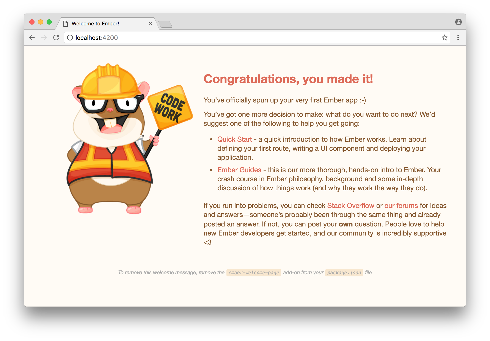
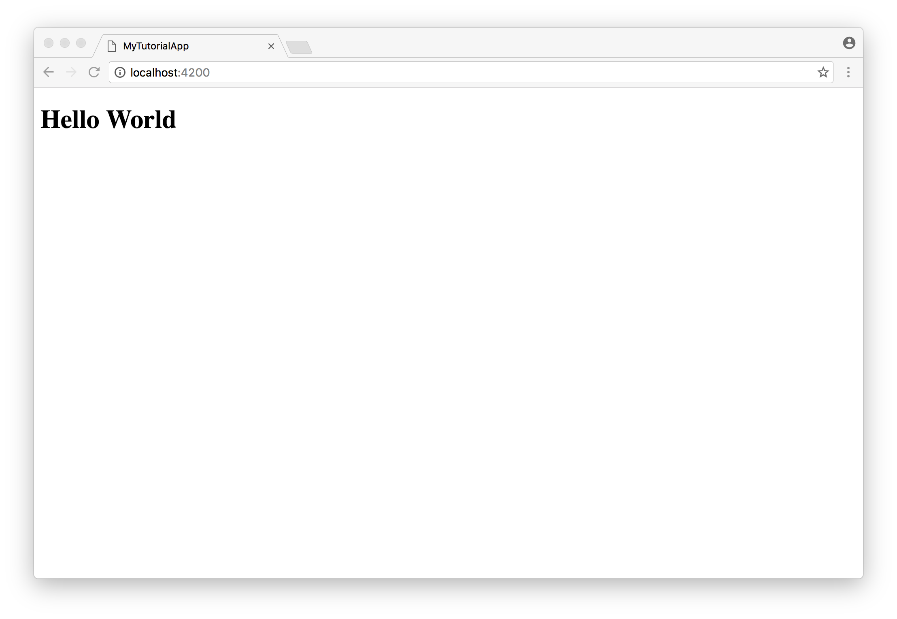
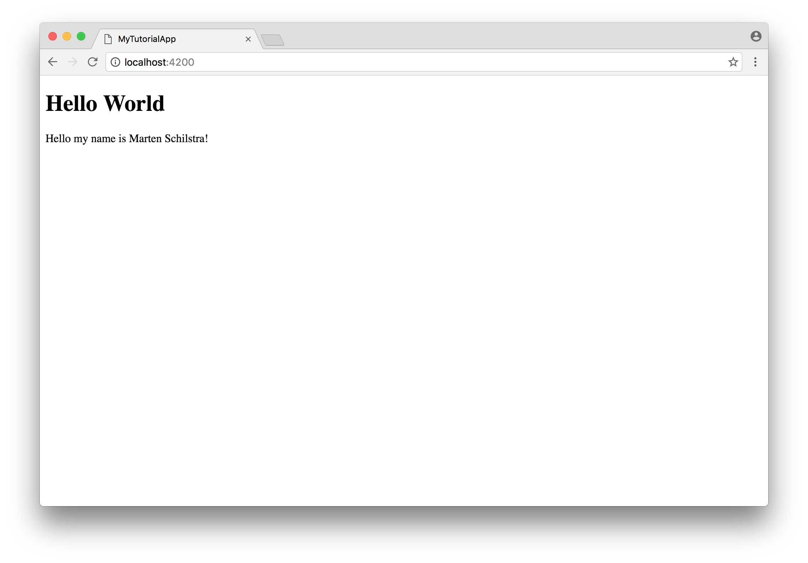
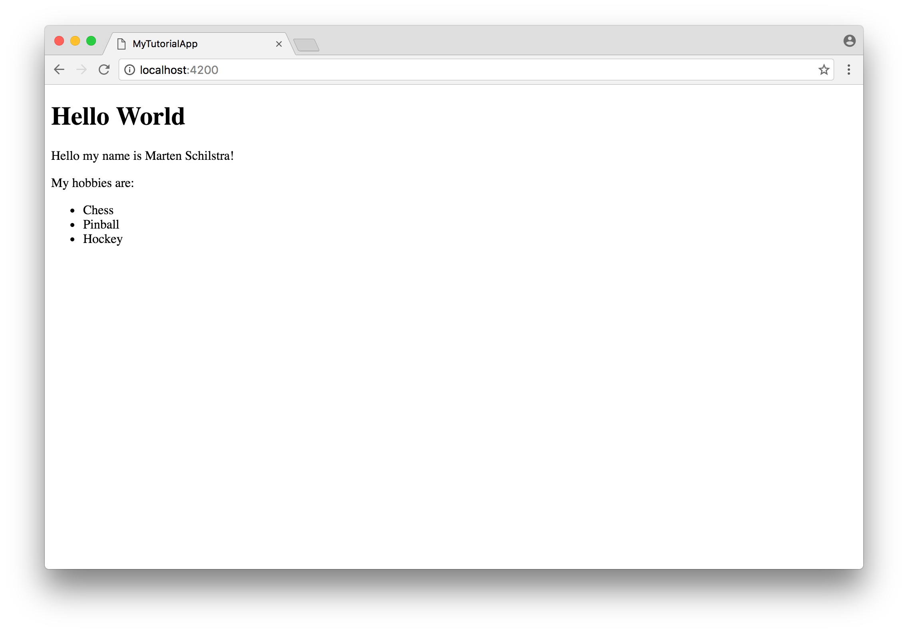

Introduction
Welcome to the Ember Guide For Complete Beginners! These guides will teach you how to build ambitious web applications with the Ember.js framework.
This guide only assumes you have basic understanding of HTML, CSS and JavaScript.
Setting Up
Ember applications are most commonly built with a tool called Ember CLI, this tool helps you generate a new application, and also helps you with building, serving and testing your application.
Before you can install Ember CLI, you need to make sure you have Node.js and a Node package manager installed. We will use the Yarn package manager throughout the guides.
After you have installed Node.js and Yarn, we can install Ember CLI by running the following command:
yarn global add ember-cli
Installing Ember CLI adds the ember command to your
terminal. With the ember command you can generate a new
application:
ember new my-tutorial-app
If you run that command, it will generate an Ember application inside a
new folder called my-tutorial-app. If you cd
into the folder, you can start working on your application.
cd my-tutorial-appNow we can start Ember CLI's development server, so we can preview our changes in the browser:
ember serveRunning that command will output:
Livereload server on http://localhost:49152
Serving on http://localhost:4200/
Build successful - 8189ms.
Now you can visit http://localhost:4200/ in your browser,
you will be greeted by the following page:

Congratulations! You are now ready to start learning how to write Ember applications.
First Steps
Let's start by getting the application to show a friendly
Hello World in the browser. To achieve this, we have to add
a Handlebars template to our
application. Handlebars templates look just like HTML, but with
handlebars expressions added. First we'll focus on the HTML part.
Templates are put in the app/templates directory of your
Ember application. Every application needs a
application.hbs to begin with. Let's add the following
app/templates/application.hbs:
<h1>Hello World!</h1>
If you now look at http://localhost:4200/, you should see
the following:

Adding a variable
Now let's add a expression to our template. Add the following to your
app/templates/application.hbs template:
<p>Hello my name is {{name}}!</p>
If you look at the result, you'll see Hello my name is !.
No name is being displayed. This is because the variable
name has not been defined yet.
Where do the values of variables in a template come from? Templates belong to either a controller or a component. The properties of one of those are the variables you can display in your template. What either a controller or a component exactly is, will be explained later.
Instead of manually adding a file and filling in the basics, we'll use a generator to do this for us. Go ahead an run the following command in your terminal:
ember generate controller applicationThat command should output the following:
installing controller
create app/controllers/application.js
installing controller-test
create tests/unit/controllers/application-test.js
This means that it added two files to your project, one file is
the file for your actual controller, the second is the file where the
tests for your controller go. We'll ignore the test file for now and
take a look at the app/controllers/application.js file:
import Ember from 'ember';
export default Ember.Controller.extend({
});
The controller file imports the Ember variable and exports
a new sub-class of Ember.Controller.
We can now add the name property, this will make the
{{name}} expression display the value of the
name property.
import Ember from 'ember';
export default Ember.Controller.extend({
name: 'Marten Schilstra'
});If we now look at the result, we should see the name being displayed: 
Adding a list of variables
Let's do something slightly more difficult. Let's add a list of our hobbies to the page.
We can start by adding the hobbies property as an array of
strings to our application controller:
import Ember from 'ember';
export default Ember.Controller.extend({
name: 'Marten Schilstra',
hobbies: ['Chess', 'Pinball', 'Hockey']
});
And also add something to the application template to
display the hobbies:
<p>My hobbies are: {{hobbies}}</p>As a result you'll see the following:
My hobbies are: Chess,Pinball,Hockey
As you can see, Ember is smart enough to display arrays as a comma
separated list. What if we want to do something a little more fancy?
For example, what if we want to display the hobbies in an
<ul> list?
Let me introduce the each expression for handlebars
templates. It looks like this:
{{#each hobbies as |hobby|}}
{{hobby}}
{{/each}}The each expression takes your array of hobbies as argument and will yield each item in the array one by one. The part of the template within the each expression is rendered for each item in the given array.
Important to note is that the each expression is in the
block form. A expression in block form starts with a # sign
and the name of the expression. It ends with a / and the
name of the expression.
The name between the vertical bars, |hobby|, is a new
variable, that can only be used within the block expression. You can
give it any name you like.
Let's now change our application template to use the
expression to display the hobbies list:
<p>My hobbies are:</p>
<ul>
{{#each hobbies as |hobby|}}
<li>{{hobby}}</li>
{{/each}}
</ul>If all went well, you should now see the following in your browser: 
Adding interactivity
Chances are, that you want your users to be able to interact with your app. For example, make something happen when a users clicks on a button or fills in a form field. Ember calls these type of interactions 'actions'.
Let's try to add a simple button that adds one to a number everytime you
click on it. First we'll set up the controller with a
clicks property and make the template display the clicks
value and a button. Starting with the controller:
import Ember from 'ember';
export default Ember.Controller.extend({
name: 'Marten Schilstra',
hobbies: ['Chess', 'Pinball', 'Hockey'],
clicks: 0
});And add the following to the template:
<p>Clicks: {{clicks}}</p>
<button>Click me</button>
Now the page should display Clicks: 0 and a button stating
Click me, but if you click the button, nothing happens.
Let's make something happen using an Ember action. This is done using
the action expression in your handlebars template. The
controller belonging to the template will also need a function handling
that action.
We want the action to happen when the button is clicked, so we need to
set the onclick attribute of the button with the action
expression. Update the HTML for the button to the following:
<button onclick={{action "buttonClicked"}}>Click me</button>
The string argument to the action is the name of the action
we want to call on the corresponding controller. Actions are looked up
as functions inside the actions property. Here's how it
looks in our example:
import Ember from 'ember';
export default Ember.Controller.extend({
name: 'Marten Schilstra',
hobbies: ['Chess', 'Pinball', 'Hockey'],
clicks: 0,
actions: {
buttonClicked() {
let clicks = this.get('clicks');
this.set('clicks', clicks + 1);
}
}
});If you now click on the button, the number of clicks displayed increases by one.
Keen observers will have noticed that the action function in the
controller contains this.get and this.set.
Normally you wouldn't need to use functions to update a property on an
object, but we'll assume for now that this is required for Ember's
template renderer to be able to detect when it needs to update the page.